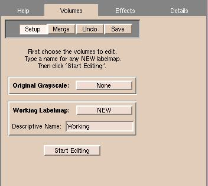
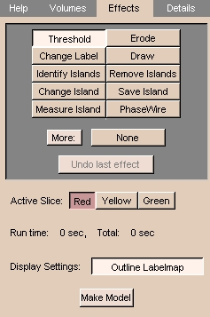
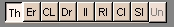

Beginning the Editing Process
Before you start editing:
- If you have multiple copies of grayscale or label maps that are part of
your scene, select the one you currently want to edit.
- Click View to change the view mode to 4x512.
Important notes:
- Slicer creates (in memory) a working version of the data that reflects your edits (called a label map). When saved, the default file name of this working copy is called
Working.
- When you have finished editing, make sure to save your changes. Slicer
will remind you if you have unsaved volumes and will display the names of
unsaved volumes.
- Slicer will strip the headers off the images when you save
your data. Slicer encodes the geometry and orientation of your data
in a MRML (Medical Reality Modeling Language) file. You can save, reload, and repeatedly
update your MRML file until you have created the scene you want.
To begin editing:
- On the Main menu, click Editor.

The Volumes tab appears:

- Click Setup.
The name you
assigned to the original series of data should be present in the Original
Grayscale field.
These are the images you will segment.
- Select NEW for the Working Labelmap, and enter a Descriptive Name for this segmentation.
For
example, if you are segmenting the ventricles of the brain, you might name this
segmentation "ventricles".
-
Click Start Editing. The Effects tab appears:

- Select the Active Slice to edit by clicking Red, Yellow, or Green. For each individual effect, you can choose whether to apply changes to this active slice, nearby slices, or the entire volume.
- After editing a single slice, continue to the next slice.
About the Editing Effects
Some considerations are common to all the editing effects:
- Select the correct input volume of data to edit, so that the edits will be applied properly.
- Set the scope of your edits properly:
one slice (the one on the screen that you are currently editing); three
slices (the current slice and the slices on either side of the current slice);
or the entire volume.
For some effects, such as drawing, it only makes sense to
have the scope of the edits be the current slice.
For other effects, such as thresholding, it makes sense to apply the changes to the
entire 3D volume.
- When you select any of the effects, the following row of buttons
appears:

The button labels are abbreviations for the effects (except for PhaseWire and
Measure Island).
The selected button is the current effect.
A description appears under the row of buttons.
- The right-most button is Undo (Un), which becomes available after you apply any effect.
If you click Un, it undoes (or reverses) the last applied effect.